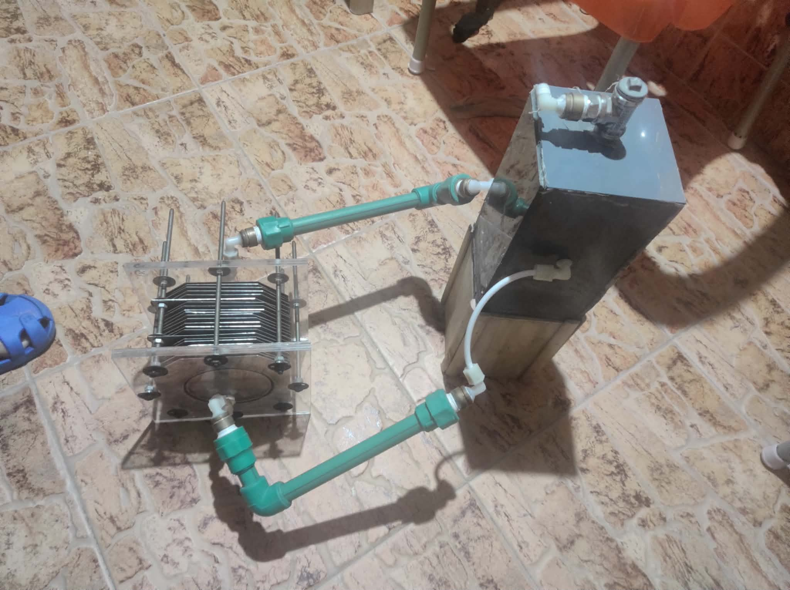

HHO Electrolysis Prototype
Bachelor's graduation project: design of an HHO cell investigated as a potential energy-related concept for electric vehicles. Prototype photos show a plate-stack assembly, reservoir and connected piping. Recognized by Canadian International College for outstanding graduation-project performance (2019).
PrototypeMechatronics2019